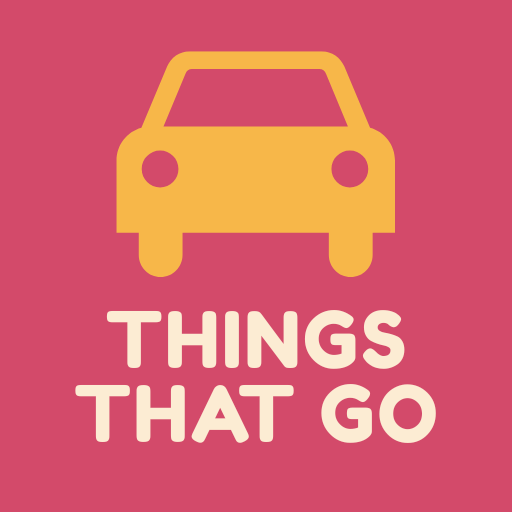

Choose a game and get silly with cars, trucks, planes, boats, trains, and more.
Tap for a random prompt and act it out.
Use your voice to make the sound.
Read the situation and make the face - try to freeze like a snapshot!
Pick one and explain your choice!
Start with a title, "Once upon a time," tell the story together, then tap for a random plot twist whenever you need one.
Shuffle an adjective, subject, and action into one ridiculous drawing prompt that you can either draw separately or work on together!
No favorites yet.